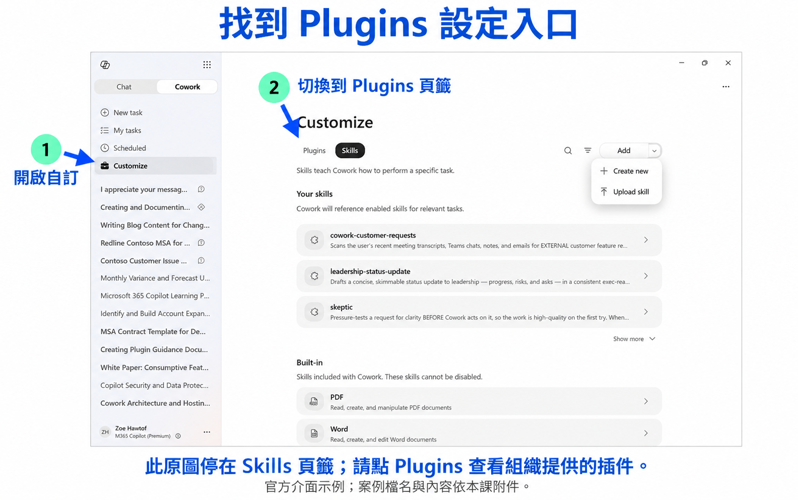
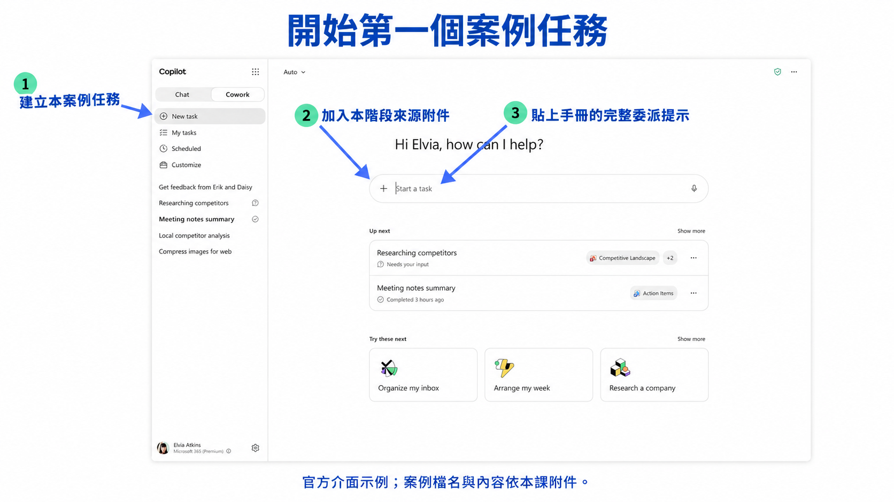
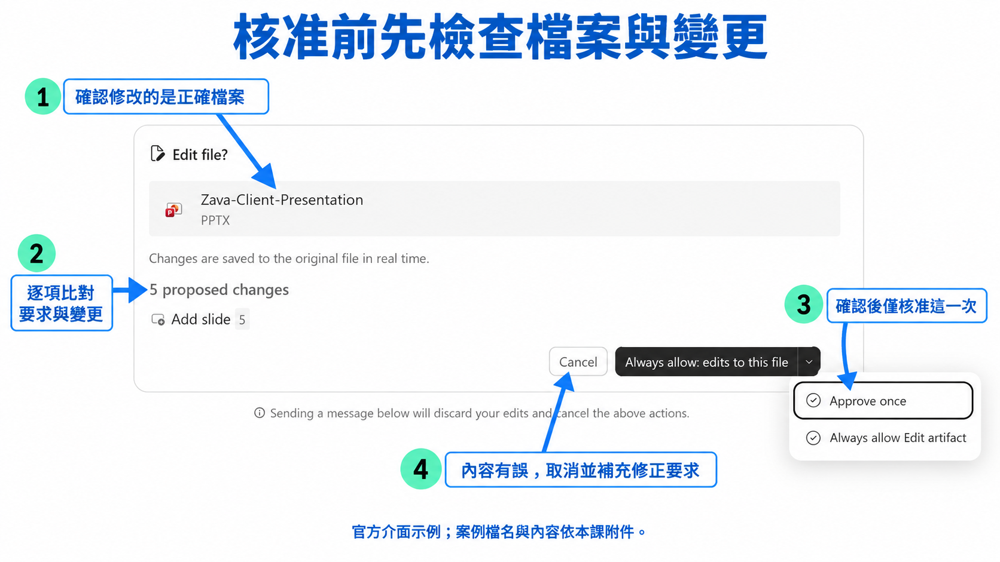
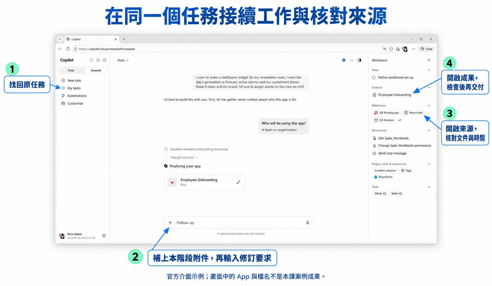

GitHub 版來源連結提供完整原文預覽；Word 與 CSV 請下載練習資料.zip。離線教材主包另含原簡報逐頁圖。
Sales Cowork 從客戶詢問到成交交接｜逐步圖解操作手冊
版本：2026-09-14 修訂版。適用：本套 12 頁情境簡報。建議課時 150 分鐘：環境與案例 15 分、八步實作各 15 分、核對及回饋 15 分。
案例公司、人員、郵件、履歷、交易、設備與工單均為合成教學資料。產品操作圖取自 Microsoft 公開實際畫面並加註；畫面中的示例任務不是本案例的租戶執行成果。
01｜先接下這個工作
你的角色：澄岳數位業務林怡君。
週一上午，遠景精密資訊主管陳雅雯來信，希望改善與供應商共用文件的方式。她說有 80 位使用者，但沒有說哪些人需要外部分享。你下午要向主管許文傑報告是否安排需求訪談；售前周承翰負責技術範圍，價格由許文傑核准。你必須先釐清工作問題，接著準備提案、處理客戶追加要求，最後把已簽範圍交給交付同事。
你要沿用一個 Cowork 任務，保存每一步的成果，再根據新收到的資料修訂。角色的批准與使用者驗證都有獨立原始紀錄；任何還未收到的文件、回覆或批准，保持待確認。
02｜課前準備與插件入口（簡報第 2 頁）
- 解壓縮整份教材包，開啟本課資料夾。先開 完整實作手冊.html，另開同資料夾的簡報。
- 登入講師指定、已開放 Cowork 的工作／學校帳戶，進入 Cowork。點左側 Customize，再點 Plugins。
- 在 Plugins 中確認講師已部署的 sales-cowork 及發行者資訊。若找不到，交由講師核對部署範圍與帳戶；Skills 頁籤與 Plugins 頁籤是不同入口。
- 本課採附件與成果草稿流程。沒有提供郵件收件帳號、ERP、資產管理或工單連線時，只交付可審閱檔案。

03｜建立任務與加入來源（簡報第 3 頁）
- 點 New task，用第一步的完整提示建立本課任務。第一句保留案例名稱，方便之後在 My tasks 找回。
- 點輸入框旁的 ＋，選 Upload images and files（依介面語言顯示上傳圖片與檔案），選擇下表「步驟 1」列出的 DOCX／CSV。
- 等附件名稱出現在輸入框且上傳完成，再貼第一步提示；按 Enter／Send。核對不是只貼出本機路徑文字。
- 後續步驟用同一任務的 Follow up 加新附件。不要一次上傳整個 data 資料夾；不要把本手冊、instructor 答案或簡報當作來源輸入。
- 要看原文件，從 References／輸入檔案區開啟；要看成果，從 Outputs／輸出檔案區開啟。介面可能使用 Workspace 或檔案側欄名稱，請以實際顯示為準。

分階段發放表：簡報、附件、成果逐步對應
簡報沿用 A／B／C 的故事分段；本版把每段拆為單獨事件文件。下表的實際檔名與 S01–S08 資料夾是上課發放依據，同一段內的後續批准不會混入較早步驟。
| 操作 | 簡報頁 | 故事段 | 本步新增附件 | 要保存的成果 |
|---|---|---|---|---|
| S01 | 4 | A | D01_客戶來信及售前往來.docx | S01_案件登錄表.xlsx |
| S02 | 5 | A | 沿用已提供來源 | S02_會前問題與議程.docx |
| S03 | 6 | B | D02_訪談逐字紀錄及原始提案.docx | S03_提案範圍修訂對照.xlsx |
| S04 | 7 | B | D03_追加需求原信.docx | S04_追加與商務送審單.docx |
| S05 | 9 | C | D04_商務核准及客戶採購回信.docx | S05_報價版本與寄送檢查.xlsx |
| S06 | 10 | C | D05_工作範圍及交付接受紀錄.docx | S06_交付交接包.docx |
| S07 | 11 | C | D06_交付前待辦與催件.docx | S07_交付週會追蹤表.xlsx |
| S08 | 12 | C | D07_工程圖新增要求.docx | S08_工程圖追加處理.docx |
來源文件怎麼讀
每份 DOCX 均列文件 ID、時間、原始文件類型、寄件／建立人、收件／參與人與完整正文。CSV 保留逐筆識別碼，沒有用一行答案代替明細。以這些欄位確認「誰在什麼時間提供了什麼」，再判斷能否改變工作狀態。
資料下載：本課 練習資料.zip。解壓後依 data/S01…S08 發放；所有新附件也能在各步直接下載。
04｜修改原檔時的核准（簡報第 8 頁）
- Cowork 若提出 Edit file?，先看檔名是否為本次要修改的版本。
- 逐項閱讀 proposed changes，對照你的要求與來源批准範圍。
- 正確時選 Approve once，只核准此一次動作；若畫面顯示其他動作名稱，核對對象及動作後再決定。
- 有誤時選 Cancel，回到輸入框指出要修正的項目，收到新提案再檢查。沒有出現核准視窗時，繼續檢查輸出，勿假設已修改共享原檔。

S01｜先把來信變成可追蹤案件（簡報第 4 頁）
工作方法：lead-intake-qualification。 現在情境時間是 2026/10/05 10:00 台北時間。僅使用此時點已發生的來源；較晚事件暫不採用。
A. 先準備這一步的來源
B. 照畫面完成委派
- 點 New task，按加號加入上列附件，確認上傳完成。
- 在 Start a task 貼上以下完整提示，確認情境時間後按 Enter／Send。
- 若 Cowork 詢問缺失欄位，回到原文件查找；來源確實沒有的值，回覆「保留待確認，先完成可支持部分」。
- 若執行中需要改要求，在同一輸入框補充；如介面顯示待處理訊息，等目前工作接續後再檢查結果。
C. 可直接貼上的完整提示
案例：Sales Cowork 從客戶詢問到成交交接；操作 S01。使用 lead-intake-qualification 的工作方法。
現在情境時間是 2026/10/05 10:00 台北時間。僅使用此時點已發生的來源；較晚事件暫不採用。
請依本階段已提供的來源 整理案件 S-26005 的原始需求、已確認條件與三個最必要的訪談問題。保留客戶「十月底知道可行方式」的原意，不寫成上線期限。產出可供主管審閱的接案表，先不建立商機或寄信。
這一步新收到的附件：D01_客戶來信及售前往來.docx。
建立可下載的 S01_案件登錄表.xlsx，內容必須包含：案件ID、客戶、聯絡人、已知現況、待確認、owner、下一步、來源ID。請提供完整正文或逐列資料，引用文件 ID 與時間。數值保留計算過程，資料不明列待確認。試算表請保留原始明細、分析或狀態提案分表；數值分析用可重算公式，不把結論貼成圖片。
本次只製作供人員審閱的成果草稿。若還缺資料，列出具體缺件及負責窗口，先完成可由現有證據支持的部分。
亦可開啟 本步提示文字檔。
D. 開啟成果並逐項查證
- 在 Outputs／輸出檔案區 點開 S01_案件登錄表.xlsx。若僅有聊天回覆，補充「請依指定檔名建立可下載檔案，保留完整內容」。
- 在 References／輸入檔案區 開來源，搜尋下表的文件 ID、列 ID 或原文關鍵詞，與成果並排核對。
- 檢查成果是否有以下欄位或段落：案件ID、客戶、聯絡人、已知現況、待確認、owner、下一步、來源ID。缺欄位先修訂。
- 逐列檢查下表；涉及數值時，在來源明細自行重算，涉及狀態時核對誰在什麼時間確認。
- 檢查通過後使用成果的 Download 保存。若看不到下載控制，先點成果預覽，再用該檔案提供的下載選項；保留版本而非覆蓋前一步。
| 檢查項 | 此時應有的內容／結果 | 去哪裡核對 |
|---|---|---|
| 公司人數 | 80 位帳戶，非首批導入承諾 | S-M001、S-T001 |
| 價格 | 尚無核准原價 | S-M002 |
| 範圍 | 待需求會談 | S-M001 |
E. 不通過時怎麼修
先指出「目前錯誤值、要核對的來源、需要改的欄位」，然後送出以下格式；不要只說再詳細一點。
請修訂 S01_案件登錄表.xlsx。我核對後發現「〔貼出錯誤內容〕」與「〔文件ID／列ID及原文〕」不符。請更正對應欄位，保留原值、新值與來源時間；重新計算受影響數值或重判狀態，其他有依據的內容保留。依本步情境時間重新檢查，不使用後續事件。輸出同名_v2 檔案供我比對。
完成實作後，展開核對參考成果與判斷
案件 S-26005 接案表 客戶為遠景精密，聯絡人陳雅雯，業務林怡君，售前周承翰，內部決策人許文傑。客戶希望十月底以前了解可行方式，問題是找不到供應商回傳的最新圖面。80 人是 Microsoft 365 使用者總數，目前未確認試行人數、外部合作人數、資料位置與分享批准人。下一步由林怡君協調本週 30 分鐘會談，周承翰釐清技術現況；價格及上線日期均未承諾。來源為資料 A 的 10/05 09:10、09:40、10:00 往來。
參考成果用來檢查證據與狀態；實際句子與版面可不同。不能用本段取代來源附件。
F. 保存並交接到下一步
保存 S01_案件登錄表.xlsx，記下使用來源、修訂次數與未解項目。下一步進入簡報第 5 頁；到了該步才加入新附件。
S02｜會前準備要問對人（簡報第 5 頁）
工作方法：customer-meeting-brief。 現在情境時間是 2026/10/05 10:00 台北時間。僅使用此時點已發生的來源；較晚事件暫不採用。
A. 先準備這一步的來源
本步沒有新附件；沿用同一任務中已加入的來源。
查看此時可沿用的前階段來源
B. 照畫面完成委派
- 從 My tasks 回到本案例，先確認前一步成果 S01_案件登錄表.xlsx 已保留。
- 在 Follow up 貼上以下提示並送出；本步不重傳相同附件。
- 若 Cowork 詢問缺失欄位，回到原文件查找；來源確實沒有的值，回覆「保留待確認，先完成可支持部分」。
- 若執行中需要改要求，在同一輸入框補充；如介面顯示待處理訊息，等目前工作接續後再檢查結果。

C. 可直接貼上的完整提示
案例：Sales Cowork 從客戶詢問到成交交接；操作 S02。使用 customer-meeting-brief 的工作方法。
現在情境時間是 2026/10/05 10:00 台北時間。僅使用此時點已發生的來源；較晚事件暫不採用。
依本階段已提供的來源 做一份 30 分鐘會前資料包。列出陳雅雯、林怡君與周承翰各自要確認的問題、議程與會後要取得的決策。未提供的時段與收件地址保留待確認，先提供會議邀請草稿。
這一步沒有新附件，請沿用前面已提供的來源。
以先前的 S01_案件登錄表.xlsx 接續工作，保留原資料與修訂痕跡。
建立可下載的 S02_會前問題與議程.docx，內容必須包含：30分鐘議程、具名受訪者、目前知道什麼、要問什麼、答案如何影響方案。請提供完整正文或逐列資料，引用文件 ID 與時間。數值保留計算過程，資料不明列待確認。
本次只製作供人員審閱的成果草稿。若還缺資料，列出具體缺件及負責窗口，先完成可由現有證據支持的部分。
亦可開啟 本步提示文字檔。
D. 開啟成果並逐項查證
- 在 Outputs／輸出檔案區 點開 S02_會前問題與議程.docx。若僅有聊天回覆，補充「請依指定檔名建立可下載檔案，保留完整內容」。
- 在 References／輸入檔案區 開來源，搜尋下表的文件 ID、列 ID 或原文關鍵詞，與成果並排核對。
- 檢查成果是否有以下欄位或段落：30分鐘議程、具名受訪者、目前知道什麼、要問什麼、答案如何影響方案。缺欄位先修訂。
- 逐列檢查下表；涉及數值時，在來源明細自行重算，涉及狀態時核對誰在什麼時間確認。
- 檢查通過後使用成果的 Download 保存。若看不到下載控制，先點成果預覽，再用該檔案提供的下載選項；保留版本而非覆蓋前一步。
| 檢查項 | 此時應有的內容／結果 | 去哪裡核對 |
|---|---|---|
| 陳雅雯 | 確認採購收發文件與客戶批准人 | S-M001 |
| 周承翰 | 確認版本與分享現況 | S-T001 |
| 會議邀請 | 時段及收件帳號待確認，草稿 | S-M002 |
E. 不通過時怎麼修
先指出「目前錯誤值、要核對的來源、需要改的欄位」，然後送出以下格式；不要只說再詳細一點。
請修訂 S02_會前問題與議程.docx。我核對後發現「〔貼出錯誤內容〕」與「〔文件ID／列ID及原文〕」不符。請更正對應欄位，保留原值、新值與來源時間；重新計算受影響數值或重判狀態，其他有依據的內容保留。依本步情境時間重新檢查，不使用後續事件。輸出同名_v2 檔案供我比對。
完成實作後，展開核對參考成果與判斷
會前資料包草稿 會議目的：確認使用情境與首階段可行範圍，尚未做價格決策。建議議程共 30 分鐘：5 分鐘請陳雅雯用一件實際找不到文件的工作說明；10 分鐘確認使用人員、資料量與目前位置；10 分鐘由周承翰詢問供應商互動、版本辨識與分享核准；5 分鐘由林怡君確認待補文件、窗口與下一次回覆。 必問問題：80 人中哪些人先參與？兩方如何確認最新版本？誰能批准對外分享？能否提供去識別化範例？預期成果是一份已確認需求與待查清單。議程是提案，尚非已建立的會議。
參考成果用來檢查證據與狀態；實際句子與版面可不同。不能用本段取代來源附件。
F. 保存並交接到下一步
保存 S02_會前問題與議程.docx，記下使用來源、修訂次數與未解項目。下一步進入簡報第 6 頁；到了該步才加入新附件。
S03｜把口頭需求轉成提案範圍（簡報第 6 頁）
工作方法：proposal-preparation。 現在情境時間是 2026/10/06 14:30 台北時間。僅使用此時點已發生的來源；較晚事件暫不採用。
A. 先準備這一步的來源
查看此時可沿用的前階段來源
B. 照畫面完成委派
- 從 My tasks 回到本案例，先確認前一步成果 S02_會前問題與議程.docx 已保留。
- 在 Follow up 左側按加號，上傳本步新增附件。等附件名稱出現後，貼上以下提示並送出。
- 若 Cowork 詢問缺失欄位，回到原文件查找；來源確實沒有的值，回覆「保留待確認，先完成可支持部分」。
- 若執行中需要改要求，在同一輸入框補充；如介面顯示待處理訊息，等目前工作接續後再檢查結果。
C. 可直接貼上的完整提示
案例：Sales Cowork 從客戶詢問到成交交接；操作 S03。使用 proposal-preparation 的工作方法。
現在情境時間是 2026/10/06 14:30 台北時間。僅使用此時點已發生的來源；較晚事件暫不採用。
依本階段已提供的來源 修正 P-01，建立提案草案：客戶工作問題、12 人試行、6 位外部協作者、120 份作業文件、三項交付、排除項目、待確認事項。附需求對照表，逐一指出原草案錯在哪裡。
這一步新收到的附件：D02_訪談逐字紀錄及原始提案.docx。
以先前的 S02_會前問題與議程.docx 接續工作，保留原資料與修訂痕跡。
建立可下載的 S03_提案範圍修訂對照.xlsx，內容必須包含：提案段落、原文、新文、納入、排除、待確認、來源ID。請提供完整正文或逐列資料，引用文件 ID 與時間。數值保留計算過程，資料不明列待確認。試算表請保留原始明細、分析或狀態提案分表；數值分析用可重算公式，不把結論貼成圖片。
本次只製作供人員審閱的成果草稿。若還缺資料，列出具體缺件及負責窗口，先完成可由現有證據支持的部分。
亦可開啟 本步提示文字檔。
D. 開啟成果並逐項查證
- 在 Outputs／輸出檔案區 點開 S03_提案範圍修訂對照.xlsx。若僅有聊天回覆，補充「請依指定檔名建立可下載檔案，保留完整內容」。
- 在 References／輸入檔案區 開來源，搜尋下表的文件 ID、列 ID 或原文關鍵詞，與成果並排核對。
- 檢查成果是否有以下欄位或段落：提案段落、原文、新文、納入、排除、待確認、來源ID。缺欄位先修訂。
- 逐列檢查下表；涉及數值時，在來源明細自行重算，涉及狀態時核對誰在什麼時間確認。
- 檢查通過後使用成果的 Download 保存。若看不到下載控制，先點成果預覽，再用該檔案提供的下載選項；保留版本而非覆蓋前一步。
| 檢查項 | 此時應有的內容／結果 | 去哪裡核對 |
|---|---|---|
| 首批人數 | 採購12人 | S-V001 |
| 提案P-01 | 逐段修正過大範圍，保留原值 | P-01 |
| 移轉 | 工程圖未納入已確認範圍 | S-V001 |
E. 不通過時怎麼修
先指出「目前錯誤值、要核對的來源、需要改的欄位」，然後送出以下格式；不要只說再詳細一點。
請修訂 S03_提案範圍修訂對照.xlsx。我核對後發現「〔貼出錯誤內容〕」與「〔文件ID／列ID及原文〕」不符。請更正對應欄位，保留原值、新值與來源時間；重新計算受影響數值或重判狀態，其他有依據的內容保留。依本步情境時間重新檢查，不使用後續事件。輸出同名_v2 檔案供我比對。
完成實作後，展開核對參考成果與判斷
P-01 修正版提案草稿 遠景精密先以採購部 12 人與兩家供應商共 6 人，處理既有共用資料夾內 120 份作業文件。交付包含一次現況盤點、一個試行協作站台與兩小時使用者交接。工程圖原檔移轉與 80 人全面導入不在此次範圍。 原「移轉全部圖面」改為「120 份作業文件」，依據 10/06 訪談；原「80 人全面導入」改為「12 人試行」，80 人保留為公司使用者總數。採購主管趙明誠確認試行資料，客戶資訊主管批准外部分享。價格待許文傑核准；技術驗收細節與上線時點須盤點後確認。
參考成果用來檢查證據與狀態；實際句子與版面可不同。不能用本段取代來源附件。
F. 保存並交接到下一步
保存 S03_提案範圍修訂對照.xlsx，記下使用來源、修訂次數與未解項目。下一步進入簡報第 7 頁；到了該步才加入新附件。
S04｜客戶追加要求，先拆出差異（簡報第 7 頁）
工作方法：commercial-review-handoff。 現在情境時間是 2026/10/08 17:00 台北時間。僅使用此時點已發生的來源；較晚事件暫不採用。
A. 先準備這一步的來源
查看此時可沿用的前階段來源
B. 照畫面完成委派
- 從 My tasks 回到本案例，先確認前一步成果 S03_提案範圍修訂對照.xlsx 已保留。
- 在 Follow up 左側按加號，上傳本步新增附件。等附件名稱出現後，貼上以下提示並送出。
- 若 Cowork 詢問缺失欄位，回到原文件查找；來源確實沒有的值，回覆「保留待確認，先完成可支持部分」。
- 若執行中需要改要求，在同一輸入框補充；如介面顯示待處理訊息，等目前工作接續後再檢查結果。
C. 可直接貼上的完整提示
案例：Sales Cowork 從客戶詢問到成交交接；操作 S04。使用 commercial-review-handoff 的工作方法。
現在情境時間是 2026/10/08 17:00 台北時間。僅使用此時點已發生的來源；較晚事件暫不採用。
請把追加要求與 P-01 修正版逐項比對，產出給許文傑的商務審查單。列出範圍、工時、價格與時程需決定的事項，並寫給客戶的回覆草稿。不要計算尚未核准的原價九折。
這一步新收到的附件：D03_追加需求原信.docx。
以先前的 S03_提案範圍修訂對照.xlsx 接續工作，保留原資料與修訂痕跡。
建立可下載的 S04_追加與商務送審單.docx，內容必須包含：原範圍、追加要求、工時或價格缺口、待批准人、對客回覆全文。請提供完整正文或逐列資料，引用文件 ID 與時間。數值保留計算過程，資料不明列待確認。
本次只製作供人員審閱的成果草稿。若還缺資料，列出具體缺件及負責窗口，先完成可由現有證據支持的部分。
亦可開啟 本步提示文字檔。
D. 開啟成果並逐項查證
- 在 Outputs／輸出檔案區 點開 S04_追加與商務送審單.docx。若僅有聊天回覆，補充「請依指定檔名建立可下載檔案，保留完整內容」。
- 在 References／輸入檔案區 開來源，搜尋下表的文件 ID、列 ID 或原文關鍵詞，與成果並排核對。
- 檢查成果是否有以下欄位或段落：原範圍、追加要求、工時或價格缺口、待批准人、對客回覆全文。缺欄位先修訂。
- 逐列檢查下表；涉及數值時，在來源明細自行重算，涉及狀態時核對誰在什麼時間確認。
- 檢查通過後使用成果的 Download 保存。若看不到下載控制，先點成果預覽，再用該檔案提供的下載選項；保留版本而非覆蓋前一步。
| 檢查項 | 此時應有的內容／結果 | 去哪裡核對 |
|---|---|---|
| 80人訓練 | 列追加，原首批仍12人 | S-M003 |
| 九折 | 客戶請求，尚無折扣核准 | S-M003 |
| 報價 | 不把客戶要求寫成已接受 | S-M003 |
E. 不通過時怎麼修
先指出「目前錯誤值、要核對的來源、需要改的欄位」，然後送出以下格式；不要只說再詳細一點。
請修訂 S04_追加與商務送審單.docx。我核對後發現「〔貼出錯誤內容〕」與「〔文件ID／列ID及原文〕」不符。請更正對應欄位，保留原值、新值與來源時間；重新計算受影響數值或重判狀態，其他有依據的內容保留。依本步情境時間重新檢查，不使用後續事件。輸出同名_v2 檔案供我比對。
完成實作後，展開核對參考成果與判斷
給許文傑的商務審查單 客戶新增要求為全公司 80 人培訓與原價九折。原提案僅包含試行及兩小時交接，且目前無核准原價。請確認是否接受培訓擴大、所需工時、價格與可行時程；新條件均維持待評估。 客戶回覆草稿：雅雯您好，已收到全員培訓與折扣需求。我們正在比對原試行範圍及所需安排，待內部確認後提供可供採購審閱的版本。目前先依 12 人試行與 120 份作業文件準備，不將追加要求視為已接受。回覆時間尚待內部確認，我會再與您協調。
參考成果用來檢查證據與狀態；實際句子與版面可不同。不能用本段取代來源附件。
F. 保存並交接到下一步
保存 S04_追加與商務送審單.docx，記下使用來源、修訂次數與未解項目。下一步進入簡報第 9 頁；到了該步才加入新附件。
S05｜寄出前檢查同一個版本（簡報第 9 頁）
工作方法：proposal-quality-review。 現在情境時間是 2026/10/12 17:00 台北時間。僅使用此時點已發生的來源；較晚事件暫不採用。
A. 先準備這一步的來源
查看此時可沿用的前階段來源
B. 照畫面完成委派
- 從 My tasks 回到本案例，先確認前一步成果 S04_追加與商務送審單.docx 已保留。
- 在 Follow up 左側按加號，上傳本步新增附件。等附件名稱出現後，貼上以下提示並送出。
- 若 Cowork 詢問缺失欄位，回到原文件查找；來源確實沒有的值，回覆「保留待確認，先完成可支持部分」。
- 若執行中需要改要求，在同一輸入框補充；如介面顯示待處理訊息，等目前工作接續後再檢查結果。
C. 可直接貼上的完整提示
案例：Sales Cowork 從客戶詢問到成交交接；操作 S05。使用 proposal-quality-review 的工作方法。
現在情境時間是 2026/10/12 17:00 台北時間。僅使用此時點已發生的來源；較晚事件暫不採用。
依 10/09 核准紀錄審查最終提案，核對 120,000 元未稅、排除項目與版本。另列 10/12 客戶回信能證明與不能證明的事情。提供送審結論及待確認事項，不把案件改為成交。
這一步新收到的附件：D04_商務核准及客戶採購回信.docx。
以先前的 S04_追加與商務送審單.docx 接續工作，保留原資料與修訂痕跡。
建立可下載的 S05_報價版本與寄送檢查.xlsx，內容必須包含：文件名稱、版本、商務核准範圍、客戶回應、簽署狀態、待寄正文。請提供完整正文或逐列資料，引用文件 ID 與時間。數值保留計算過程，資料不明列待確認。試算表請保留原始明細、分析或狀態提案分表；數值分析用可重算公式，不把結論貼成圖片。
本次只製作供人員審閱的成果草稿。若還缺資料，列出具體缺件及負責窗口，先完成可由現有證據支持的部分。
亦可開啟 本步提示文字檔。
D. 開啟成果並逐項查證
- 在 Outputs／輸出檔案區 點開 S05_報價版本與寄送檢查.xlsx。若僅有聊天回覆，補充「請依指定檔名建立可下載檔案，保留完整內容」。
- 在 References／輸入檔案區 開來源，搜尋下表的文件 ID、列 ID 或原文關鍵詞，與成果並排核對。
- 檢查成果是否有以下欄位或段落：文件名稱、版本、商務核准範圍、客戶回應、簽署狀態、待寄正文。缺欄位先修訂。
- 逐列檢查下表；涉及數值時，在來源明細自行重算，涉及狀態時核對誰在什麼時間確認。
- 檢查通過後使用成果的 Download 保存。若看不到下載控制，先點成果預覽，再用該檔案提供的下載選項；保留版本而非覆蓋前一步。
| 檢查項 | 此時應有的內容／結果 | 去哪裡核對 |
|---|---|---|
| 商務核准 | 只依核准信範圍更新 | S-APP009 |
| 客戶正面回覆 | 不等於正式訂單或簽約 | S-M004 |
| 文件一致 | 提案、附件、郵件採同版範圍 | S03、S04 |
E. 不通過時怎麼修
先指出「目前錯誤值、要核對的來源、需要改的欄位」，然後送出以下格式；不要只說再詳細一點。
請修訂 S05_報價版本與寄送檢查.xlsx。我核對後發現「〔貼出錯誤內容〕」與「〔文件ID／列ID及原文〕」不符。請更正對應欄位，保留原值、新值與來源時間；重新計算受影響數值或重判狀態，其他有依據的內容保留。依本步情境時間重新檢查，不使用後續事件。輸出同名_v2 檔案供我比對。
完成實作後，展開核對參考成果與判斷
提案送審結論 本次送審版本應一致採用 10/09 核准的 TWD 120,000 未稅、12 人試行、120 份文件、一個站台、兩小時交接。工程圖移轉與全員培訓保留為排除項目。寄送前逐一比對附件正文、金額與範圍頁，不能混用舊 P-01。 10/12 回信只證明客戶同意把方向交採購看，尚無採購或簽署證據。案件維持待採購審查；林怡君追蹤正式審查窗口及下一步。這是審查結論與寄送準備，未執行寄送或變更商機狀態。
參考成果用來檢查證據與狀態；實際句子與版面可不同。不能用本段取代來源附件。
F. 保存並交接到下一步
保存 S05_報價版本與寄送檢查.xlsx，記下使用來源、修訂次數與未解項目。下一步進入簡報第 10 頁；到了該步才加入新附件。
S06｜已簽署才開始交付交接（簡報第 10 頁）
工作方法：close-delivery-handoff。 現在情境時間是 2026/10/19 17:00 台北時間。僅使用此時點已發生的來源；較晚事件暫不採用。
A. 先準備這一步的來源
B. 照畫面完成委派
- 從 My tasks 回到本案例，先確認前一步成果 S05_報價版本與寄送檢查.xlsx 已保留。
- 在 Follow up 左側按加號，上傳本步新增附件。等附件名稱出現後，貼上以下提示並送出。
- 若 Cowork 詢問缺失欄位，回到原文件查找；來源確實沒有的值，回覆「保留待確認，先完成可支持部分」。
- 若執行中需要改要求，在同一輸入框補充；如介面顯示待處理訊息，等目前工作接續後再檢查結果。
C. 可直接貼上的完整提示
案例：Sales Cowork 從客戶詢問到成交交接；操作 S06。使用 close-delivery-handoff 的工作方法。
現在情境時間是 2026/10/19 17:00 台北時間。僅使用此時點已發生的來源；較晚事件暫不採用。
依 SOW-26005 v1.0 製作給楊子晴的交接包：已簽範圍、客戶角色、文件清單缺口、已承諾與未承諾事項、下一步。保留 10/21 取得清單的責任及來源，不自行排定上線日期。
這一步新收到的附件：D05_工作範圍及交付接受紀錄.docx。
以先前的 S05_報價版本與寄送檢查.xlsx 接續工作，保留原資料與修訂痕跡。
建立可下載的 S06_交付交接包.docx，內容必須包含：正式範圍、簽署版本、起始依賴、owner、交接接受、驗收與變更處理。請提供完整正文或逐列資料，引用文件 ID 與時間。數值保留計算過程，資料不明列待確認。
本次只製作供人員審閱的成果草稿。若還缺資料，列出具體缺件及負責窗口，先完成可由現有證據支持的部分。
亦可開啟 本步提示文字檔。
D. 開啟成果並逐項查證
- 在 Outputs／輸出檔案區 點開 S06_交付交接包.docx。若僅有聊天回覆，補充「請依指定檔名建立可下載檔案，保留完整內容」。
- 在 References／輸入檔案區 開來源，搜尋下表的文件 ID、列 ID 或原文關鍵詞，與成果並排核對。
- 檢查成果是否有以下欄位或段落：正式範圍、簽署版本、起始依賴、owner、交接接受、驗收與變更處理。缺欄位先修訂。
- 逐列檢查下表；涉及數值時，在來源明細自行重算，涉及狀態時核對誰在什麼時間確認。
- 檢查通過後使用成果的 Download 保存。若看不到下載控制，先點成果預覽，再用該檔案提供的下載選項；保留版本而非覆蓋前一步。
| 檢查項 | 此時應有的內容／結果 | 去哪裡核對 |
|---|---|---|
| 基準 | SOW-26005 v1.0 | SOW-26005 |
| 接受交接 | 已具名接受，引用時間 | S-M005 |
| 前置資料 | 客戶提供與驗證後才判完成 | SOW-26005 |
E. 不通過時怎麼修
先指出「目前錯誤值、要核對的來源、需要改的欄位」，然後送出以下格式；不要只說再詳細一點。
請修訂 S06_交付交接包.docx。我核對後發現「〔貼出錯誤內容〕」與「〔文件ID／列ID及原文〕」不符。請更正對應欄位，保留原值、新值與來源時間；重新計算受影響數值或重判狀態，其他有依據的內容保留。依本步情境時間重新檢查，不使用後續事件。輸出同名_v2 檔案供我比對。
完成實作後，展開核對參考成果與判斷
交付交接單 S-26005 基準為雙方已簽 SOW-26005 v1.0。楊子晴於 10/19 明確接受交接。已簽工作與排除項目沿用核准提案，客戶採購主管確認文件、資訊主管批准分享。 未決事項：120 份文件清單尚未到，由林怡君依楊子晴要求於 10/21 取得；啟動會議待雙方協調；上線日期待盤點。交接完成的證據是楊子晴接受回覆，並不代表站台已建置或客戶已驗收。
參考成果用來檢查證據與狀態；實際句子與版面可不同。不能用本段取代來源附件。
F. 保存並交接到下一步
保存 S06_交付交接包.docx，記下使用來源、修訂次數與未解項目。下一步進入簡報第 11 頁；到了該步才加入新附件。
S07｜週會只追仍未完成的承諾（簡報第 11 頁）
工作方法：daily-sales-rhythm。 現在情境時間是 2026/10/21 17:00 台北時間。僅使用此時點已發生的來源；較晚事件暫不採用。
A. 先準備這一步的來源
查看此時可沿用的前階段來源
B. 照畫面完成委派
- 從 My tasks 回到本案例，先確認前一步成果 S06_交付交接包.docx 已保留。
- 在 Follow up 左側按加號，上傳本步新增附件。等附件名稱出現後，貼上以下提示並送出。
- 若 Cowork 詢問缺失欄位，回到原文件查找；來源確實沒有的值，回覆「保留待確認，先完成可支持部分」。
- 若執行中需要改要求，在同一輸入框補充；如介面顯示待處理訊息，等目前工作接續後再檢查結果。
C. 可直接貼上的完整提示
案例：Sales Cowork 從客戶詢問到成交交接；操作 S07。使用 daily-sales-rhythm 的工作方法。
現在情境時間是 2026/10/21 17:00 台北時間。僅使用此時點已發生的來源；較晚事件暫不採用。
沿用案件 S-26005，製作今天的跟進清單與客戶提醒草稿。只追文件清單及啟動會議安排；列出逾期對盤點的影響。已簽費用和排除範圍維持原版，先不要寄出。
這一步新收到的附件：D06_交付前待辦與催件.docx。
以先前的 S06_交付交接包.docx 接續工作，保留原資料與修訂痕跡。
建立可下載的 S07_交付週會追蹤表.xlsx，內容必須包含：未完成承諾、負責人、承諾時間、現況證據、影響、下一次追蹤。請提供完整正文或逐列資料，引用文件 ID 與時間。數值保留計算過程，資料不明列待確認。試算表請保留原始明細、分析或狀態提案分表；數值分析用可重算公式，不把結論貼成圖片。
本次只製作供人員審閱的成果草稿。若還缺資料，列出具體缺件及負責窗口，先完成可由現有證據支持的部分。
亦可開啟 本步提示文字檔。
D. 開啟成果並逐項查證
- 在 Outputs／輸出檔案區 點開 S07_交付週會追蹤表.xlsx。若僅有聊天回覆，補充「請依指定檔名建立可下載檔案，保留完整內容」。
- 在 References／輸入檔案區 開來源，搜尋下表的文件 ID、列 ID 或原文關鍵詞，與成果並排核對。
- 檢查成果是否有以下欄位或段落：未完成承諾、負責人、承諾時間、現況證據、影響、下一次追蹤。缺欄位先修訂。
- 逐列檢查下表；涉及數值時，在來源明細自行重算，涉及狀態時核對誰在什麼時間確認。
- 檢查通過後使用成果的 Download 保存。若看不到下載控制，先點成果預覽，再用該檔案提供的下載選項；保留版本而非覆蓋前一步。
| 檢查項 | 此時應有的內容／結果 | 去哪裡核對 |
|---|---|---|
| 文件清單 | 未提供，不能寫移轉可開始 | S-M006 |
| 已簽範圍 | 仍用v1.0 | SOW-26005 |
| 承諾 | 只追未完成項，不把催辦當完成 | S-M006 |
E. 不通過時怎麼修
先指出「目前錯誤值、要核對的來源、需要改的欄位」，然後送出以下格式；不要只說再詳細一點。
請修訂 S07_交付週會追蹤表.xlsx。我核對後發現「〔貼出錯誤內容〕」與「〔文件ID／列ID及原文〕」不符。請更正對應欄位，保留原值、新值與來源時間；重新計算受影響數值或重判狀態，其他有依據的內容保留。依本步情境時間重新檢查，不使用後續事件。輸出同名_v2 檔案供我比對。
完成實作後，展開核對參考成果與判斷
10/21 跟進清單 林怡君追蹤客戶文件清單，期限為今日，狀態仍未收到；影響是無法完成資料盤點與後續時程確認。啟動會議由林怡君與楊子晴協調，尚無確認時間。 提醒草稿：雅雯您好，為準備已簽試行工作的盤點，想請協助確認 120 份作業文件清單目前的準備情況。若今日無法提供，請告知可提供日期，讓我們一起調整盤點安排。也請協助提供啟動會議可用時段。費用及已簽範圍維持 SOW-26005 v1.0。
參考成果用來檢查證據與狀態；實際句子與版面可不同。不能用本段取代來源附件。
F. 保存並交接到下一步
保存 S07_交付週會追蹤表.xlsx，記下使用來源、修訂次數與未解項目。下一步進入簡報第 12 頁；到了該步才加入新附件。
S08｜結業：新增範圍如何承接（簡報第 12 頁）
工作方法：opportunity-strategy。 現在情境時間是 2026/10/22 09:00 台北時間。僅使用此時點已發生的來源；較晚事件暫不採用。
A. 先準備這一步的來源
查看此時可沿用的前階段來源
B. 照畫面完成委派
- 從 My tasks 回到本案例，先確認前一步成果 S07_交付週會追蹤表.xlsx 已保留。
- 在 Follow up 左側按加號，上傳本步新增附件。等附件名稱出現後，貼上以下提示並送出。
- 若 Cowork 詢問缺失欄位，回到原文件查找；來源確實沒有的值，回覆「保留待確認，先完成可支持部分」。
- 若執行中需要改要求，在同一輸入框補充；如介面顯示待處理訊息，等目前工作接續後再檢查結果。
C. 可直接貼上的完整提示
案例：Sales Cowork 從客戶詢問到成交交接；操作 S08。使用 opportunity-strategy 的工作方法。
現在情境時間是 2026/10/22 09:00 台北時間。僅使用此時點已發生的來源；較晚事件暫不採用。
請交付一份可供主管決定的變更申請與客戶回覆草稿。引用已簽排除條款，列需要補查的檔案量、權限及使用方式；說明哪些原定工作可繼續、哪些需等待新核准。
這一步新收到的附件：D07_工程圖新增要求.docx。
以先前的 S07_交付週會追蹤表.xlsx 接續工作，保留原資料與修訂痕跡。
建立可下載的 S08_工程圖追加處理.docx，內容必須包含：新增要求、原簽署範圍對照、影響待估、批准人、客戶回覆、承接下一步。請提供完整正文或逐列資料，引用文件 ID 與時間。數值保留計算過程，資料不明列待確認。
本次只製作供人員審閱的成果草稿。若還缺資料，列出具體缺件及負責窗口，先完成可由現有證據支持的部分。
亦可開啟 本步提示文字檔。
D. 開啟成果並逐項查證
- 在 Outputs／輸出檔案區 點開 S08_工程圖追加處理.docx。若僅有聊天回覆，補充「請依指定檔名建立可下載檔案，保留完整內容」。
- 在 References／輸入檔案區 開來源，搜尋下表的文件 ID、列 ID 或原文關鍵詞，與成果並排核對。
- 檢查成果是否有以下欄位或段落：新增要求、原簽署範圍對照、影響待估、批准人、客戶回覆、承接下一步。缺欄位先修訂。
- 逐列檢查下表；涉及數值時，在來源明細自行重算，涉及狀態時核對誰在什麼時間確認。
- 檢查通過後使用成果的 Download 保存。若看不到下載控制，先點成果預覽，再用該檔案提供的下載選項；保留版本而非覆蓋前一步。
| 檢查項 | 此時應有的內容／結果 | 去哪裡核對 |
|---|---|---|
| 工程圖 | 新增範圍需評估 | S-M007、SOW-26005 |
| 舊前置 | 文件清單缺口仍追蹤 | S-M006 |
| 回覆 | 說明收到、評估與待決事項，不承諾既有價期 | S-M007 |
E. 不通過時怎麼修
先指出「目前錯誤值、要核對的來源、需要改的欄位」，然後送出以下格式；不要只說再詳細一點。
請修訂 S08_工程圖追加處理.docx。我核對後發現「〔貼出錯誤內容〕」與「〔文件ID／列ID及原文〕」不符。請更正對應欄位，保留原值、新值與來源時間；重新計算受影響數值或重判狀態，其他有依據的內容保留。依本步情境時間重新檢查，不使用後續事件。輸出同名_v2 檔案供我比對。
完成實作後，展開核對參考成果與判斷
工程圖追加變更申請草稿 原 SOW 排除工程圖移轉，本次追加須另外確認檔案種類、容量、版本管理方式、外部分享條件與使用權限。由林怡君收集需求、周承翰盤點影響，再交許文傑決定報價及承諾，完成必要簽署後才納入交付基準。 客戶回覆草稿：工程圖可另行評估。我們會先確認檔案及協作方式，再提供影響範圍。原 120 份作業文件的已簽試行可在所需清單備妥後繼續；新增工程圖尚待技術與商務確認。
參考成果用來檢查證據與狀態；實際句子與版面可不同。不能用本段取代來源附件。
F. 保存並交接到下一步
提交 S08_工程圖追加處理.docx 與前七步成果；用下方驗收表說明哪些工作已完成、哪些仍須人員決定。
05｜結業驗收與補做方法
| 驗收 | 學員需展示的證據 | 不通過時補做 |
|---|---|---|
| 來源 | 指出每個重大數值或狀態的文件ID及時間 | 補上缺失引用；不能以AI回答當原始證據 |
| 流程 | 展示八個步驟如何接續，不重置前面未完成事項 | 回到遺漏步驟補來源，再修訂後續成果 |
| 例外 | 辨認第八步的不當要求，保留正確工作與待決部分 | 逐項比對原批准範圍與新要求 |
| 成果 | 八份可下載完整檔案，有必要欄位及正文 | 按指定欄位補齊，不以幾行摘要交件 |
| 人工判斷 | 分開請求、草稿、核准、執行及使用者驗證 | 補具名及時間；沒有證據的狀態退回待確認 |
每項 0–2 分：0 為缺失或無法查證；1 為指出問題但成果未改；2 為來源、判斷及修訂後成果一致。至少 8 分且不得把未核准動作或未執行測試標為完成。此表是課堂評量規格，尚不代表已在你的 Cowork 租戶測試通過。
06｜常見卡點與處理
| 看到的情況 | 現在怎麼做 | 恢復檢查 |
|---|---|---|
| Plugin 找不到 | 回 Customize → Plugins，請講師核對帳戶與部署範圍 | 以該插件可見及本步工作方法可使用為課前條件 |
| 附件未出現 | 確認上傳已完成；重新用＋選文件，不貼本機路徑 | 比對實際附件檔名 |
| 引用了未來事件 | 列錯誤來源日期，要求依本步截止時間重寫 | 結果不再包含未發生的批准或完成紀錄 |
| 只有聊天摘要 | 要求建立指定檔名的完整Word或Excel成果 | 開啟檔案檢查欄位、正文及逐列資料 |
| 查不到缺件 | 保留待確認，具名列出要問誰與缺什麼 | 不擅自補金額、權限、日期或根因 |
| 修改原檔錯誤 | 依圖3取消並指明錯誤檔名或範圍 | 收到新提案後再次逐項檢查 |
07｜本 Plugin 的 Skills 索引
本課每步只選用與當下工作相關的方法。其餘 Skills 可依下一個真實工作需要選用：
- account-plan
- account-research
- close-delivery-handoff
- commercial-review-handoff
- customer-meeting-brief
- daily-sales-rhythm
- deal-inspection
- forecast-decision-pack
- lead-intake-qualification
- market-competitive-research
- meeting-follow-up
- opportunity-strategy
- pipeline-workspace-hygiene
- proposal-preparation
- proposal-quality-review
- renewal-expansion-review
- sales-outreach-engagement
- sales-task-planning
08｜介面來源與教材適用範圍
- Microsoft Cowork 使用指南：新增任務、附件、後續指示、檔案預覽及下載。
- Microsoft Cowork 自訂指南：Skills 與 Plugins 入口及管理。
- Microsoft 官方 Cowork in progress：本手冊四張操作圖的原始產品畫面，含截至 2026-09-11 的文章更新。
- 本課 Plugin 原始程式庫：插件工作方法與部署套件。
介面核對日：2026-09-14。手冊圖為官方畫面加註，原圖範例人名與檔案名稱保持官方示例；案例成果以本課委派產出為準。課程版號與簡報故事、步驟及截止時間一致；本次重建原始資料及操作手冊，沒有宣稱已完成租戶執行。